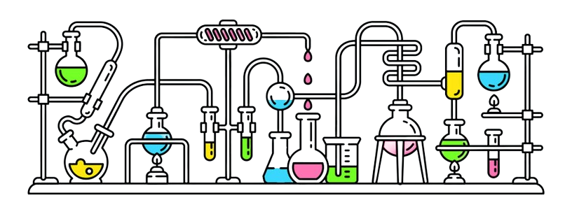
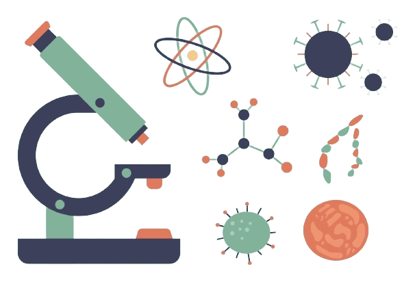

Hello! Im Zineb Bougataya
A Biology enthusiast delving into the mysteries of DNA and exploring the intricacies of ecosystems. My curiosity knows no bounds as I am on a dedicated mission to unravel the wonders of life. Passionate about understanding the complexities of the natural world, I eagerly embrace the challenges that come with my academic journey.  Current School : [Al Makrizi]
Major : Biology
Expected graduation : 2024
Laboratory Work : I engaged in lab activities both at my school and as part of my involvement in the National Biology Olympics.
Mastering laboratory techniques is essential in my ability to effectively communicate scientific concepts to diverse audiences.
Engaged in community-based biology education initiatives
As an active member of the Biology Club at my school, I participated in the National Biology Olympics in Morocco.